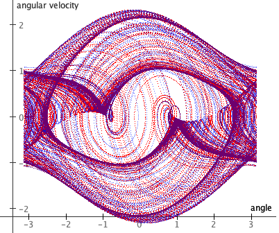

Physics-based simulation of two driven pendulums that start almost identically; this
demonstrates sensitivity to initial conditions of chaotic systems. It looks like a
single pendulum at first, but wait for a minute and you will see the two pendulums
diverge in their behavior.
Click the "Sim" tab to access parameters such as: starting angle difference, drive
amplitude, frequency, mass, gravity, and damping. You can drag the pendulum with your
mouse to change the starting position.
The pendulums are continuously driven by an external torque force that varies
between twisting clockwise and counterclockwise. This torque force is represented by
the curved arrow, the length of the arrow corresponds to the strength of the force.

graph of angular velocity vs. angle for two chaotic pendulums
These are two independent pendulum simulations running simultaneously. They start
with almost identical initial conditions, but just slightly different starting angles
(the difference is the angle difference parameter). Running for several
minutes produces the graph shown at left.
You will notice that the pendulums stay in sync for a while, then drift slightly
apart, and then are soon completely different in their behavior. This is an example of
sensitivity to initial conditions which is a hallmark of
chaotic systems.
This is also known as the
Butterfly Effect whereby a
butterfly flapping its wings in North America could cause a storm to occur in South
America.
The angle difference parameter specifies the difference
between the start angle of the two pendulums. Try different values for the starting
angle difference, and measure how much time it takes for the pendulums to diverge
significantly. If you make a graph of this (difference in starting angle vs time to
divergence), is it a linear or exponential curve? Is this different to how a linear
system would respond?
For the math behind the simulation see the page about the
Chaotic Driven Pendulum; this is the same
simulation as that one, except here there are two pendulums.
Also available are:
open source code,
documentation and a
simple-compiled version
which is more customizable.